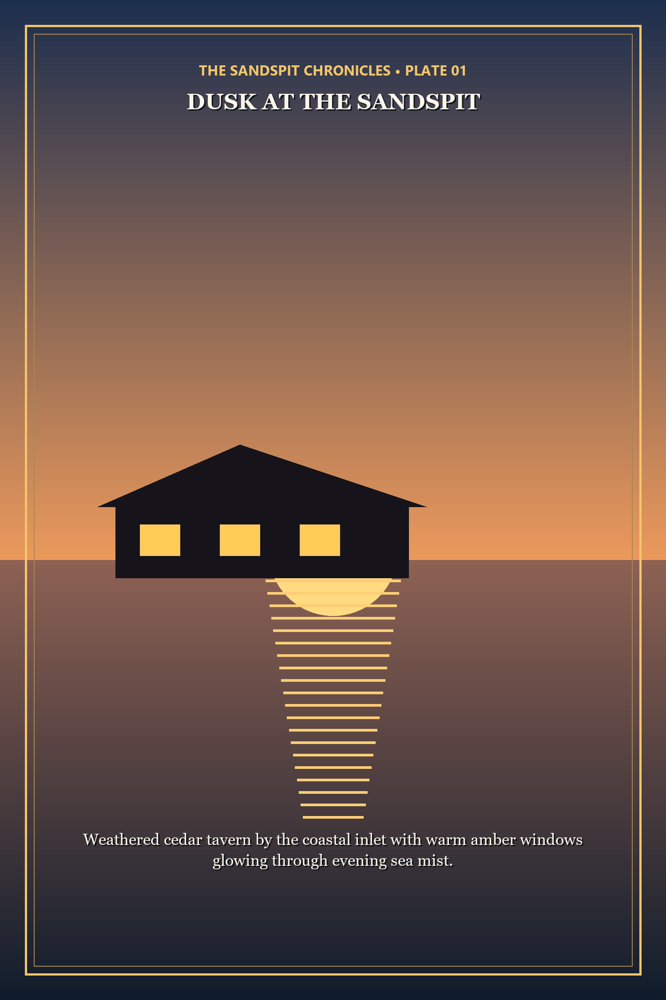

The Quiet One at the End of the Bar — Chapter 1: The Usual Spot

The bell above the door rang at eight-oh-two.
Mike heard it the way other people hear their own name — not as surprise, but as confirmation. He was already inside, standing in the first eight feet of space before the room opened up, hand resting on the brass handle that had gone smooth beneath two decades of palms. The handle was warm. It was always warm on Tuesdays, from the kitchen heat bleeding through the wall when Marcy ran the fryer early for wing night.
He let go of the door and stood still for three seconds. Not out of ritual. Out of habit. Three seconds was enough time to let the room register him without his having to announce himself any further.
The Sandspit smelled like garlic-parmesan and old beer. It always did on Tuesdays. The garlic-parmesan sat on top, bright and immediate, the way Marcy intended it — she threw scent the same way she threw flavor, with her whole wrist and no hesitation. Underneath that, the older smell: two decades of fermented grain absorbed into wood and brick and tile, a base note so permanent it had stopped being an odor and become a presence. Like walking into a library and smelling paper. You didn't notice it until someone pointed it out, and after that you couldn't unsmell it even if you wanted to.
Mike didn't want to.
He moved through the front zone past the coat rack — Marcy's denim jacket hung there already, which meant she'd come in through the side door and was probably in the walk-in checking inventory. Two jackets besides hers: Big Walt's navy windbreaker from last night that he'd forgotten again, and a stranger's tan shell that hadn't been here forty minutes ago. New face. Mike filed this away without turning his head toward the door. He didn't need to. The bell had told him someone entered at seven-fifty-one, and the coat confirmed it was still inside.
The bar ran thirty feet left to right along the front windows, positioned so the bartender could see the room and the door at the same time. Dana had insisted on that geometry when they built the place. Security through sightlines, she'd told Rick once, and Mike had overheard the conversation two years ago on a night when the bar was empty except for him and a drunk who fell asleep in the booth and drooled on his own shoulder. He hadn't woken up. The drunk, meaning to say he slept through close time and Dana found him at midnight and carried him — actually carried him, six-foot-two, to the parking lot and laid him across the hood of his own truck like a dog she was putting down for the night. She'd done it without complaining. Mike had watched from Stool 3 the way you watch someone demonstrate a strength they don't know they have.
Stool 3 waited for him where it always did. Third from the door end, facing forward so he could see who walked in and what the parking lot was doing beyond the windows. The spring in this stool made two distinct sounds when you shifted weight — a high whine to the left, a lower groan to the right. Mike had learned, over seven hundred some odd nights, how to sit without triggering either one. He lowered himself smoothly, found the center of the vinyl circle that his body had worn deeper than the other seven, and came to rest without audible protest.
The bar registered him the way a room registers a piece of furniture being returned to its proper place: not with attention, but with relief.
Jess was behind the bar. She moved across the thirty feet of wood the way a pianist moves across keys — practiced, precise, hands that didn't spill and eyes that tracked three conversations at once without looking like she was tracking anything at all. She was twenty-seven or twenty-eight; Mike hadn't pinned down the exact number because numbers felt aggressive applied to someone whose age changed depending on whether she was laughing or not. When she laughed — and she laughed often, though not always for reasons the room could see — she was younger. When her expression settled into default, which hovered between amused and wary, she was older than anyone in the room deserved.
She had his glass ready before he'd fully stopped moving.
That wasn't special treatment. It was pattern recognition working in both directions. Jess knew Mike arrived at eight-oh-two give or take four minutes, seven nights out of ten, and ordered a whiskey neat from the same rocks glass with the thick base that she polished at opening and returned to the same position on the rack each time he set it down. He came most nights but never stayed late — he'd never been in the bar past eleven-thirty in two years, which was its own kind of regularity. People who noticed patterns (Jess noticed patterns) found comfort in them. A man who showed up like clockwork and left like tide was a man you could build an evening around.
She slid the glass across the wood. Ice-free, amber-colored, measured not guessed. Dana had trained her that way back when Jess was still new enough to pour from hip on slow nights. "People come here to escape their day," Dana had told her, and Mike had been there to hear it because he'd always been there to hear everything, which was the problem with sitting in one spot for two years — you became a wall, and walls absorbed conversations nobody meant for them to carry. "They don't need your estimation error as part of the experience."
Jess had never poured from hip again.
"Evening, Mike," she said. Not loud. Not quiet. The volume you used for someone who'd been coming here long enough that greeting him felt like acknowledging the weather — not personal, just true.
"Evening."
She held his eyes for a half-second longer than the word required. It wasn't flirtation, exactly. It was assessment. Jess assessed everyone who walked through her door the way other people checked mirrors before driving — quick, automatic, looking for something she couldn't name until it became a problem. On this particular evening, she found nothing new, which was what she wanted. New things at The Sandspit meant change, and change meant work, and Jess had enough work built into her bones from standing eight hours a night that she didn't volunteer for more.
She turned to Stool 5, where a man named Derek sat drinking light beer and talking about his truck with nobody in particular. Jess refilled his glass without asking because Derek asked for nothing and received everything, which made him either the most comfortable man in Escambia County or the laziest, depending on who was judging. Jess didn't judge. She just poured.
Mike took his first pull of whiskey and let it sit on his tongue long enough to register temperature and proof before swallowing. Room temperature, ninety-two proof, same bottle he'd been drinking since November of last year when Jess told him the distillery had changed their barrel source and he'd nodded once — a slight tilt of the head downward that could have meant I hear you or that's unfortunate depending on who was reading him. Jess had settled on he doesn't like change either, which wasn't quite right but was close enough to be functional.
The room was filling. It always filled the same way: slow accretion rather than sudden arrival. People came in pairs or alone, found their spots, and settled into positions that looked casual but weren't — every regular at The Sandspit sat somewhere specific on purpose, even if they'd never admitted it aloud. Derek at Stool 5 because he wanted to be near the middle of things without being in the middle of things. Two women in their fifties at Table 2 by the window because natural light had faded but the habit of sitting where you could still see outside hadn't. A guy Mike didn't know well — construction worker, new to the bar maybe six weeks — standing near the pool table talking to Big Walt, who was already holding a beer he'd bought himself and probably two more he'd bought for people who hadn't asked yet.
Big Walt filled space the way Mike emptied it. That wasn't a contradiction; it was an observation about complementary forces. Walt was a big man — broad shoulders, thick arms, a frame built for physical work that he'd never really stopped doing even after the Navy let him go. He wore a navy cap with an insignia Mike hadn't identified but didn't need to. The cap said: I served somewhere you weren't, and I'm not going to explain where unless you earn the geography. Mike respected that. He'd learned long ago that some men carried their histories like loaded weapons — not pointed at anyone, just present, heavy in the hand, a reminder that the body remembers what the mind tries to file away.
Walt laughed at something the construction worker said, and the laugh filled the room the way heat fills a house — not all at once, but gradually, moving wall to wall until every surface was warm with it. Walt's laugh lines were deep enough to catch neon light. The red sign above the bar's left third cast a wash across his face that made him look either younger or more dangerous, and Mike couldn't decide which reading was accurate because Walt operated in a register where those two things might be the same.
The pool table clicked from the northwest corner — balls striking each other with that sharp satisfying sound that exists on no playlist because it can't be replicated digitally. It was a physical sound, produced by hardened resin hitting hardened resin across olive-green felt that had faded from two decades of cloth dragging. The table was slightly out of level in the northwest quadrant because the building had settled unevenly back in year five and Rick had tried to shim it three times before accepting that some imperfections were structural commitments, not temporary conditions. Mike watched a ball roll off-center on a shot that should have gone true. He didn't comment. The table had been out of level longer than he'd been alive in this room, and commenting now would be like apologizing to gravity for showing up uninvited.
Behind the bar, Dana stood at the register running a tab for someone Mike hadn't noticed ordering yet. She was early forties with hair pulled back in a way that communicated utility over vanity — not ugly, just done. Her eyes carried a tiredness that didn't come from age but from carrying weight nobody else could see, the particular exhaustion of someone who has been the responsible person for so long that irresponsibility would require a vacation from herself. She wore comfortable shoes because she'd be on her feet for ten hours and another four after that doing books in the office. Mike had seen those books once — Dana had left them open on a night when she came out to the bar looking for a pen, and he'd glanced down while she was reaching across his section of the counter. Numbers in tight handwriting. Margins narrow. Red ink appearing more frequently than it had six months ago. He'd said nothing. She'd noticed him looking and closed the books with a speed that suggested either guilt or self-preservation, and Mike hadn't pressed because pressing was for people who confused motion with progress.
Dana turned from the register and caught his eye across twelve feet of bar top and three conversations and one man arguing softly with himself near the restrooms. Their eyes met for maybe two seconds — not long enough to be meaningful, long enough to be recognized. Dana's mouth moved.
"Quiet Mike."
She didn't say it loudly. She didn't need to. The volume she used was the kind that traveled well in a room this size — warm enough to carry, low enough not to perform. But it carried anyway, and two heads near Stool 6 turned toward her the way sunflowers turn toward light: not dramatically, just inevitably.
Mike held her gaze for one more second after the words landed. He didn't smile because smiling would have been an answer, and he wasn't sure what question she was asking. The nickname could have been affection. It could have been observation. It could have been both, which was probably what made it stick. Quiet Mike. As if quiet were a middle name rather than a behavior. As if it described what he was instead of how he moved through rooms.
He didn't correct her because she was right.
"Whiskey's on its way, Dan," Jess called from the other end of the bar, where she was pouring for the construction worker who'd decided against standing and had taken Stool 7 near Cal's corner. Cal wasn't here tonight — his guitar case wasn't by the door, which meant either he hadn't arrived yet or he'd chosen to play elsewhere. Mike tracked Cal's appearances the way he tracked everything: not obsessively, just consistently. Cal came four nights out of ten, usually Thursday through Saturday, sometimes Tuesday if the song he was working felt like it needed an audience before it was ready for one. No case at the door meant no guitar tonight. Mike filed this alongside the new coat on the rack and Big Walt's forgotten windbreaker and Dana's red ink: data points in a system that ran on accumulation rather than revelation.
Dana came out from behind the register and walked the length of her own bar, which she did maybe twice a month — not out of weakness, but because standing behind wood for eight hours made her legs ache in a specific place just below the knee that ice didn't fix and stretching barely touched. She stopped at Stool 4, two positions right of Mike, and set down a glass of ice water she hadn't ordered and probably wouldn't drink. Dana ordered drinks she didn't need on nights when the books worried her. Mike had charted this pattern without meaning to: red ink frequency correlated with Dana consuming liquids that sat unfinished at room temperature for forty-five minutes before she set the glass down and went back inside herself.
Tonight's glass would join that dataset.
She leaned one hip against the bar at Stool 4 — not sitting, just resting weight — and looked out across her room the way a captain looks out across water. Not scanning. Assessing. The difference mattered: scanning implied something might be wrong; assessing assumed everything was exactly where it needed to be and verified that assumption against reality. Dana's eyes moved from Big Walt (laughing, buying someone else's drink, generous in a way that cost him money he didn't have to spend) to the two women at Table 2 (talking low, sharing onion rings off a single plate, the kind of friendship that survived on proximity and shared salt) to the new coat near the door (still unmoved, which meant the owner was either in the restroom or sitting somewhere the coat didn't drape toward).
Her eyes reached Mike last. They always did. Not because he was the most important thing in the room — he wasn't, and Dana knew the difference between importance and constancy — but because he was the last variable she needed to check. You don't scan the horizon for rocks you've already mapped. You glance at them once to confirm they haven't moved, and then you sail.
"You here early," she said. Not a question. A statement that contained a question inside it, the way Dana spoke most things — direct on the surface, layered underneath.
"Eight-oh-two." Mike's voice was lower than he'd intended. He hadn't spoken aloud since saying evening to Jess forty seconds ago, and disuse had added friction to the mechanism. The words came out rougher than the thought they carried.
Dana nodded once. "Clockwork."
The word hung between them for a moment — not charged, just present. Clockwork implied precision, reliability, a system that ran because its parts knew their positions and didn't argue about them. Mike could have told her that clockwork was also a machine, and machines wore down, and the more precisely something ran the harder it broke when it finally stopped. But he didn't say any of that because saying it would have been performance, and performance was for people who needed the room to know what was happening inside them.
He took another pull of whiskey. The glass felt warm in his hand now — body heat transferring through thick base, amber liquid cooling by maybe half a degree from when Jess poured it. Small changes accumulating toward larger ones. That was how time worked, though nobody talked about it that way. They talked about time as if it moved in hours and minutes, discrete units you could spend or waste. Mike knew better. Time moved the way water moved — steadily, directionally, shaping everything it touched without announcing itself until you stood on a riverbank twenty years later and realized the bank wasn't where it used to be.
Behind him, the door bell rang again. Another entry at eight-twelve. Mike didn't turn. He could hear the footsteps —women's shoes, heels but not high ones, maybe two inches, walking at pace that suggested purpose rather than wandering. The footsteps moved past the coat rack (no pause, so no jacket removal) and headed toward Table 4 in the center of the room. Lily, probably. Dana's daughter worked weekends at a coffee shop two towns over and came to The Sandspit in the evenings when she wasn't studying or texting her friend Maya or sitting in her apartment thinking about questions she couldn't google answers for. Mike had seen her enter this bar forty-seven times in the past eight months, and he knew her footsteps the way he knew everything else that repeated: not memorized, just recognized.
The neon buzzed. Not loudly — the signs at The Sandspit didn't so much illuminate as color, casting red or blue or pink washes across faces depending on where you sat. Mike's stool lived in a zone where the red beer sign and the blue generic sign overlapped, creating a faint purple tint on his hands when he rested them on the bar. He looked down at them now: knuckles slightly prominent, nails cut short, a scar across his left index finger from a knife slip in a kitchen that wasn't this one, in a life that wasn't this one, two years before he'd walked through The Sandspit's door for the first time and decided — without deciding, really, which was the whole point — that he needed a place that felt steady.
The bar gave him steadiness without asking him to explain what he meant by it. That was rare enough to be valuable.
Big Walt clapped someone on the shoulder near the pool table — the construction worker, probably, though it could have been anyone within Walt's radius of generosity, and that radius extended further than most people assumed because Walt measured distance in loyalty rather than feet. The clap produced a sound like a book closing: sharp, final, affectionate in a way that didn't require words afterward.
Jess moved to Mike's section of the bar and refilled Derek's glass at Stool 5 without breaking her conversation with the woman who'd just taken Table 4. Multitasking wasn't the right word for what Jess did. Multitasking implied division of attention. What Jess practiced was something closer to simultaneous presence — she could be in three places at once because she'd trained herself to stop treating attention as a finite resource and started treating it like muscle memory. Her hands poured while her mouth talked while her eyes checked the door, and none of those actions suffered for the sharing.
Mike watched her work the way other people watch water find its level: not with admiration exactly, but with the quiet recognition that some systems run themselves when you stop interfering. Jess didn't try to be the center of anything at The Sandspit. She just kept it running, and keeping things running was its own form of gravity — not loud, not flashy, but everything eventually orbited toward whatever wasn't moving because stillness creates a field that motion has to navigate around.
Dana pushed off the bar top at Stool 4 and picked up her unfinished glass of water. She carried it back behind the register and set it down without drinking from it. The prediction held: red ink tonight, weight on her shoulders, liquid consumed for comfort rather than thirst and abandoned when comfort failed to arrive. Mike filed this alongside Cal's absent guitar case and the new coat and eight-twelve entry. The dataset was growing. Patterns emerged from accumulation, not announcement, and he'd learned — the hard way, in a kitchen with a different knife and a different scar — that patterns didn't care about your timeline. They revealed themselves when they were ready, which was never at the moment you needed them to.
He took another pull of whiskey. Let it sit. Swallowed.
The bar breathed around him. Not loud. Not quiet. Just alive in the way a room full of people who show up most nights and know each other's names and order the same things and sit in the same spots can be alive — not with excitement, but with equilibrium. A body at rest. Temperature normal. Pulse regular. Breathing steady.
Mike rested his hands on the bar top where twenty years of arms had worn the stain to honey-gold. The wood was warm from contact — his own heat and maybe three others who'd sat near him tonight and left before he arrived, their warmth lingering in the grain like memory. He didn't move for a long time.
He had nowhere to be. Nobody to be. And the bar didn't need him to do anything except sit still and let the room remember what equilibrium felt like.
The bell above the door rang again at eight-twenty-four.
Mike heard it. Filed it away. Didn't turn his head.
He was Quiet Mike, and quiet people knew the difference between noticing everything and needing to respond to it.
Tonight, he would notice.
That was enough.
End of Chapter 1